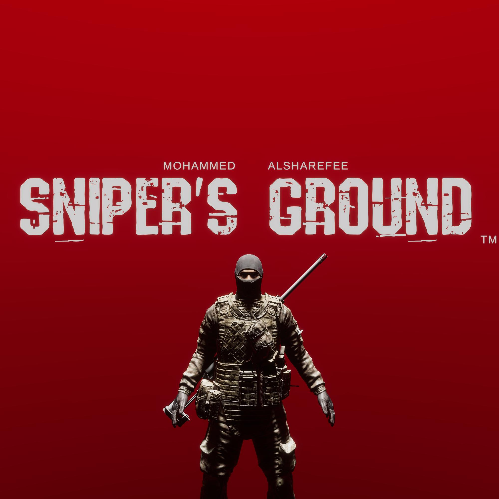
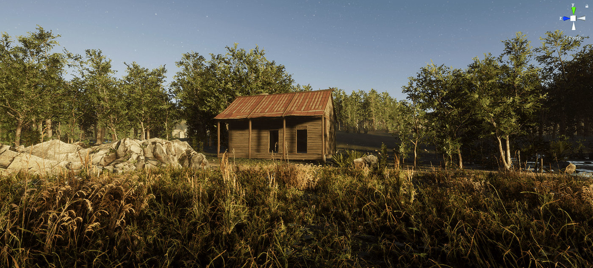

Sniper's Ground: VR Multiplayer Sniping Game
Release Date: 2026
Here I was attempting to make a volumetric type of laser that gets affected by smoke or fog.
Here I made a real-time lighting destruction system where players can destroy the lights in the buildings and force other players to use night vision.
This was the menu of Sniper's Ground.
Sniper's Ground is a PC VR multiplayer sniping stealth shooting game featuring a dynamic day and night cycle, high-fidelity graphics, and integrated voice chat.
I dedicated almost 3 years to developing Sniper's Ground before releasing it on Itch.io. Ultimately, I made the difficult decision to remove the game due to a low player base and the volatile nature of the VR ecosystem at the time. Core VR SDKs and libraries, such as OpenVR and SteamVR 1.0, were frequently being deprecated, making long-term maintenance unsustainable.
Technical Highlights
- Environment Rendering: Utilized Unity's HLOD (Hierarchical Level of Detail) solution to efficiently render dense forests and trees.
- Multiplayer Networking: Integrated Normcore by Normal VR for seamless real-time multiplayer synchronization and voice chat.
- Custom Terrain Grass: Engineered a bespoke terrain grass system utilizing GPU compute buffers for highly optimized, dense grass rendering.
Gallery





The game characters.
The night vision object that players had to put on their heads to activate the night vision post-processing effect.